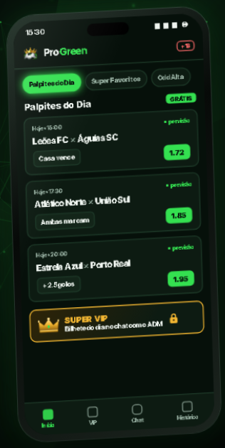
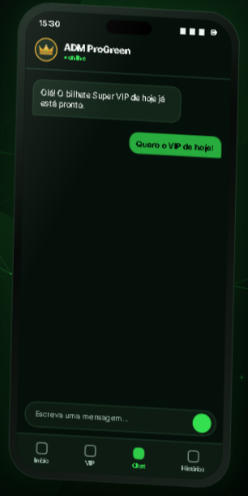

Previsões de futebol, todos os dias.
O ProGreen reúne análises e previsões dos jogos do dia, organizadas por categoria. Os palpites são grátis e sem anúncios. Quem quiser mais pode pedir o bilhete Super VIP pelo chat.
⬇ Baixar para AndroidGrátis · Android 7.0 ou mais novo · Apenas para maiores de 18 anos


O que encontra no app
GRÁTISPalpites do DiaPrevisões para os jogos de hoje.
GRÁTISSuper FavoritosAs previsões destacadas pela equipa.
GRÁTISOdd AltaSeleções com odds mais elevadas e mais risco.
SUPER VIPHistórico e chatHistórico dos bilhetes VIP com o resultado de cada um. O bilhete do dia pede-se no chat, onde o administrador explica as condições.
Como instalar
- Toque em Baixar para Android e transfira o ficheiro
ProGreen.apk. - Abra o ficheiro. Se o Android pedir, permita "Instalar apps desconhecidos" para o navegador.
- Toque em Instalar, abra o ProGreen e crie a sua conta com o número de telefone.
+18 · Jogue com responsabilidade. As previsões são estimativas e não garantem ganhos. Apostar envolve risco financeiro. Nunca aposte dinheiro de que precisa para despesas essenciais. O ProGreen não recebe apostas: apenas publica previsões. Se sentir que perdeu o controlo, pare e procure ajuda junto de família, amigos ou de um profissional de saúde.